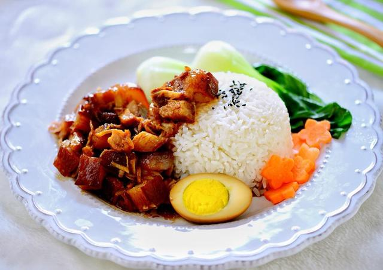

滷肉飯
滷肉飯，是台灣常見的，也是經典的美食。
滷肉飯的特色在於肉醬和肉汁，它們是製作的關鍵部分。
滷肉飯在台南、台中、台北的製作方法和特點均有差異。
如同許多的台灣小吃一樣，在全台各地都有店家販賣滷肉飯。
而滷肉飯在台灣南北地區有不同的意義。
在台灣北部，滷肉飯為一種淋上含有煮熟碎豬肉(豬絞肉)及醬油滷汁的白飯的料理，
有時醬汁里亦會有香菇丁等的成份在內，與焢肉飯不同，而此種作法在台灣南部稱作「肉燥飯」。

三杯雞
薑母鴨
花生豬腳
心得